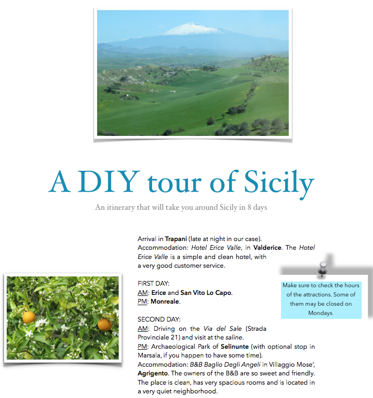
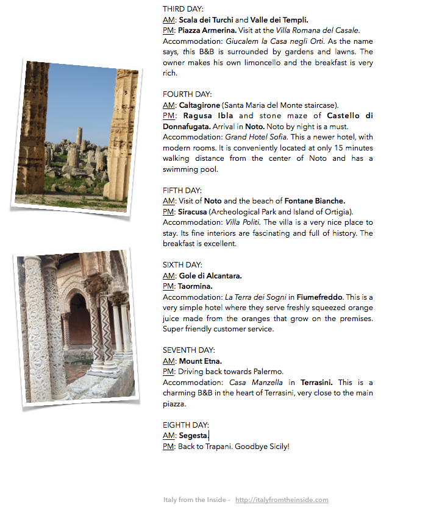

To close the chapter on our tour of Sicily, I thought that it could be useful for you to have a summary of our itinerary, just in case you want to replicate our experience.
Since it took me quite a while to organize this trip, spending hours to research the best of Sicily, including places to stay and things to do, I think it is worthwhile to pass it all on to you, in case your dream is to go see this beautiful island and would like some guidance.
Obviously we had to make a selection and eliminate some important areas (such as the whole north-east section of the island. Sigh...). However, I still feel that we saw a lot considering the little time we had. Sicily is a big island, ideally you would need at least a month to visit it all with no rush.
So, here it is, I hope this can help!


You can also download our PDF file if you wish:
8 day itinerary of Sicily- Italy From The Inside